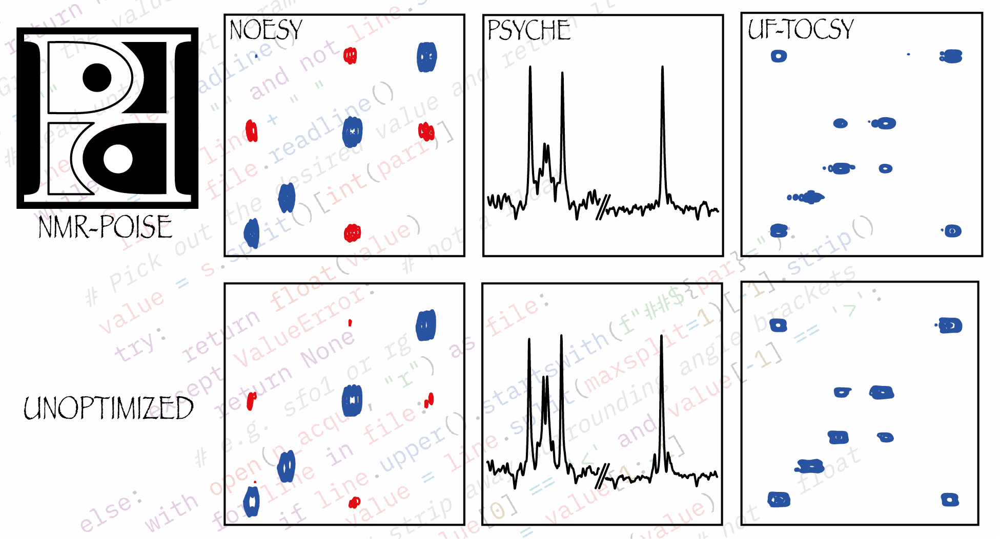

POISE User Guide¶
POISE (Parameter Optimisation by Iterative Spectral Evaluation) is a Python package for on-the-fly optimisation of NMR parameters in Bruker’s TopSpin software.
In here you will find guides on setting POISE up and using it in routine NMR applications. This guide can largely be read in sequence. However, depending on your level of interaction with the software, you may not need to read all of it. For example, if somebody else has already set up POISE for you, you can probably skip to Running an optimisation.
Note
The documentation you are currently reading is for version 1.2.0 of POISE.
To check your current version of POISE, type poise --version in TopSpin.